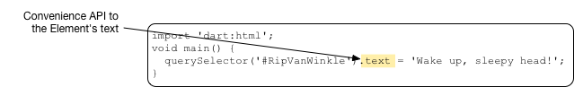
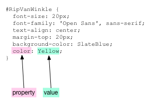

Connect Dart & HTML
Write a mini Dart app.
To write a Dart web app, you need to have basic understanding of several topics—the DOM tree, nodes, elements, HTML, Dart language and libraries, and Dart Editor.
The interdependencies are circular, but we have to begin somewhere, so we begin with a simple HTML file, which introduces the DOM tree and nodes. From there, you build a bare bones, stripped-down Dart application that contains just enough code to dynamically put text on the page from the Dart side. Though simple, this example shows you how to connect a Dart app to an HTML page and one way that a Dart app can interact with items on the page. These concepts provide the foundation for more interesting and useful web apps.
- About the DOM
- Create a new Dart app
- Edit the HTML file
- About the HTML source code
- Edit Dart source code
- About the Dart source code
- Summary of HTML and Dart connections
- Run the mini web app
- Give the app some style with CSS
- About CSS selectors
- Other resources
- What next?
About the DOM
The Document Object Model (DOM) represents the structure of a web document as a tree of nodes. When an HTML file is loaded into a browser, the browser interprets the HTML and displays the document in a window. The following diagram shows a simple HTML file and the resulting web browser page in Chrome.

HTML uses tags to describe the document. For example, the simple HTML code above uses the <title> tag for the page title, <h1> for a level-one header, and <p> for a paragraph. Some tags in the HTML code, such as <head> and <body>, are not visible on the web page, but do contribute to the structure of the document.
In the DOM, the document object sits at the root of the tree (it has no parent). Different kinds of nodes in the tree represent different kinds of objects in the document. For example, the tree has page elements, text nodes, and attribute nodes. Here is the DOM tree for the simple HTML file above.
Notice that some tags, such as the <p> paragraph tag, are represented by multiple nodes. The paragraph itself is an element node. The text within the paragraph is a text node (and in some cases, might be a subtree containing many nodes). And the ID is an attribute node.
Except for the root node, each node in the tree has exactly one parent. Each node can have many children.
An HTML file defines the initial structure of a document. Dart or JavaScript can dynamically modify that document by adding, deleting, and modifying the nodes in the DOM tree. When the DOM is changed, the browser immediately re-renders the window.

The diagram shows a small Dart program that makes a modest change to the DOM by dynamically changing a paragraph’s text. A program could add and delete nodes, or even insert an entire sub-tree of nodes.
Create a new Dart app
The application you write in this tutorial is a web application.
Web applications use code from the browser package
to run inside of a browser,
so you need to start with the supporting files and packages
even for the smallest web app.
In Dart Editor, create a new web application
like you did in the previous tutorial,
Get Started.
Name the app mini.
- Type
miniin the application name field. - Use the suggested parent directory or specify an alternate.
- Select Uber Simple Web Application from the project template list.
- Click Finish.
Edit the HTML file
When Dart Editor created the application,
it created boilerplate HTML code.
Double click index.html to open it.
Then replace the code with the following,
simplied HTML.
<!DOCTYPE html>
<html>
<head>
<title>A Minimalist App</title>
</head>
<body>
<p id="RipVanWinkle">
RipVanWinkle paragraph.
</p>
<script type="application/dart" src="main.dart"></script>
<script src="packages/browser/dart.js"></script>
</body>
</html>
Finish your edits and save the file with File > Save.
About the HTML source code
This HTML code is similar to the simple HTML code in the various diagrams earlier in this tutorial. Again, you can see the use of the <head>, <title>, <body>, and <p> tags. And there, in the paragraph tag, is an identifier “RipVanWinkle”. The Dart code you create in the next step uses this ID to get the paragraph element.
Notice the use of the script tag.
The source for a script is provided by a client-side file.
The HTML code above has two scripts.
The first script includes your mini app.
The type attribute specifies that the script has
the type application/dart,
which is a new type created by the Dart team.
Only the Dartium build of Chromium supports application/dart.
The src attribute provides the URL to the source file of the script.
In this case, it is the Dart source file main.dart,
which you provide in the next step.
The Dart file should be in the same directory as its host HTML file.
The second script tag is
a bootstrap script that takes care of turning on the Dart VM,
as well as compatibility with non-Dart browsers.
Edit Dart source code
Open main.dart and modify the source code
to look like this:
import 'dart:html';
void main() {
querySelector('#RipVanWinkle').text = 'Wake up, sleepy head!';
}
About the Dart source code
Let’s step through the code.
Importing libraries
The import directive imports the specified library, making all of the classes and functions in that library available to your program.

This program imports Dart’s HTML library, which contains key classes and functions for programming the DOM. Key classes include:
| Dart class | Description |
|---|---|
| Node | Implements a Dart Node. |
| Element | A subclass of Node, implements a web page element. |
| Document | Another subclass of Node. Implements the document object. |
The Dart core library contains another useful class, List, a parameterized class that can specify the type of its members. An instance of Element keeps its list of child Elements in a List<Element>.
Using the querySelector() function
This app’s main() function contains a single line of code that is a little like a run-on sentence with multiple things happening one after another. Let’s deconstruct it.
querySelector() is a top-level function provided by the Dart HTML library that gets an Element object from the DOM.
The argument to querySelector(), a string, is a CSS selector that identifies the object. Most commonly CSS selectors specify classes, identifiers, or attributes. We’ll look at these in a little more detail later, when we add a CSS file to the mini app. In this case RipVanWinkle is the unique ID for a paragraph element declared in the HTML file and #RipVanWinkle specifies that ID.

Another useful function for getting elements from the DOM
is querySelectorAll(),
which returns multiple Element objects via
a list of elements—List
Setting the text of an Element
In the DOM, the text of a page element is contained in a child node, specifically, a Text node. In the following diagram, the node containing the string “RipVanWinkle paragraph.” is a text node.

More complex text, such as text with style changes or embedded links and images, would be represented with a subtree of text nodes and other objects.
In Dart,
you can simply use the Element text property,
which has a getter
that walks the subtree of nodes for you and extracts their text.

However, if the text node has styles (and thus a subtree), getting text and then setting it immediately is likely to change the DOM, as a result of losing subtree information. Often, as with our RipVanWinkle example, this simplification has no adverse effects.
The assignment operator (=) sets the text of the Element returned by the querySelector() function to the string “Wake up, sleepy head!”.

This causes the browser to immediately re-render the browser page containing this app, thus dynamically displaying the text on the browser page.
Summary of HTML and Dart connections
This diagram summarizes the connections
between main.dart and index.html.
Run the mini web app
In Dart Editor,
select index.html and then click the Run button
 .
Dart Editor invokes Dartium
and loads
.
Dart Editor invokes Dartium
and loads index.html in it.
Below is mini app running in a frame.
The app displays the text provided by Dart code,
namely “Wake up, sleepy head!”,
not the text provided in the HTML file, as shown in the following screen shot.
The Dart web app changed the text in the browser window dynamically at runtime. Of course, placing text on a browser page and doing nothing else could be accomplished with straight HTML. This little app only shows you how to make a connection from a Dart app to a browser page.
Give the app some style with CSS
Most HTML uses cascading style sheets (CSS) to define styles that control the appearance of page elements. Let’s customize the CSS for the mini app.
In Dart Editor, edit the file named styles/main.css
and replace the contents of the file with
the following CSS code:
#RipVanWinkle {
font-size: 20px;
font-family: 'Open Sans', sans-serif;
text-align: center;
margin-top: 20px;
background-color: SlateBlue;
color: Yellow;
}
This defines a style
for the page element
with the ID RipVanWinkle.
To use this style sheet,
edit index.html and add the line shown in bold below:
Save your files and run the app again.
The following screen shot shows the output of the revised mini app, which is slightly more colorful but still neither interactive nor interesting.
About CSS selectors
IDs, classes, and other information about elements are established in HTML. Your Dart code can use this information to get elements using a CSS selector—a pattern used to select matching elements in the DOM. CSS selectors allow the CSS, HTML, and Dart code to refer to the same objects. Commonly, a selector specifies an ID, an HTML element type, a class, or an attribute. Selectors can also be nested.
CSS selectors are important in Dart programs because you use them with querySelector() and querySelectorAll() to get matching elements from the DOM. Most often Dart programs use ID selectors with querySelector() and class selectors with querySelectorAll().
Here are some examples of CSS selectors:
| Selector type | Example | Description |
|---|---|---|
| ID selector | #RipVanWinkle | Matches a single, unique element |
| HTML element | p | Matches all paragraphs |
| HTML element | h1 | Matches all level-one headers |
| Class | .classname | Matches all items with the class classname |
| Asterisk | * | Matches all elements |
| Attribute | input[type=”button”] | Matches all button input elements |
Let’s look at the CSS code for mini app. The CSS file for the mini app has one CSS rule in it. A CSS rule has two main parts: a selector and a set of declarations.
In mini app, the selector #RipVanWinkle is an ID selector, as signaled by the hash tag (#); it matches a single, unique element with the specified ID, our now tired RipVanWinkle paragraph element. RipVanWinkle is the ID in the HTML file. It is referred to in the CSS file and in the Dart code using a hash tag(#). Classnames are specified in the HTML file without a period (.) and referred to in the CSS file and in Dart code with a period (.).
Between the curly brackets of a CSS rule is a list of declarations, each of which ends in a semi-colon (;). Each declaration specifies a property and its value. Together the set of declarations define the style sheet for all matching elements. The style sheet is used to set the appearance of the matching element(s) on the web page.

The CSS rule for the RipVanWinkle paragraph specifies several properties; for example, it sets the text color to Yellow.
Other resources
- Dart: Up and Running provides thorough coverage of the Dart language, libraries, and tools. If a topic is not covered explicitly here, you can find the information you need there.
- Dart Editor, an excerpt from Dart: Up and Running, provides details about using Dart Editor. The excerpt includes, for example, how to use Dart Editor's power features such as autocompletion and refactoring, how to set up different run-time environments, and so on.
What next?
The next tutorial, Add Elements to the DOM, shows you how to dynamically change the HTML page by adding elements to the DOM.